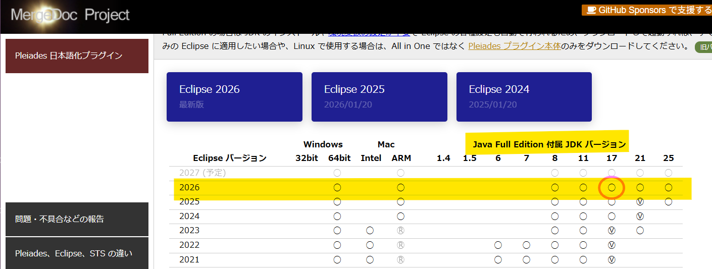

はじめに
バーテックスのインタラクティブガイドへようこそ。ここでは、Spring Boot, JDBC, Thymeleaf を使用したシンプルなWEBアプリケーションの作成手順を、ステップバイステップで学習します。左のナビゲーションメニューから各ステップを選択して、学習を開始してください。
実装する主な機能は、従業員の一覧表示、登録、更新、削除（CRUD）です。
使用技術
Spring Boot
Thymeleaf
JDBC
Gradle
Eclipse
H2 Database
Tips:アプリケーションを支える技術
このアプリケーションは、MVC (Model-View-Controller) という設計パターンに基づいて構築されています。これは、アプリケーションを3つの役割に分割することで、見通しが良く、メンテナンスしやすい構造を保つための考え方です。
-
Model (モデル):
アプリケーションのデータとビジネスロジック（処理）を担当します。今回のハンズオンでは、
Memberエンティティ、MemberDao、MemberServiceがこれに該当します。 -
View (ビュー):
ユーザーに見える部分（UI）を担当します。今回は、Thymeleafで作成する
list.htmlやform.htmlがこれに該当します。 -
Controller (コントローラ):
ユーザーからのリクエストを受け取り、ModelとViewを制御する司令塔の役割を担います。
MemberControllerがこれに該当します。一般的に、Controllerにはビジネスロジック（業務処理）を直接記述せず、Serviceレイヤーを呼び出すことに専念させることで、関心事（アプリケーション上でプログラムや各モジュールが持つ機能、役割）が明確に分離され、見通しの良い設計になります。
JDBC (Java Database Connectivity) は、Javaアプリケーションからデータベースに接続し、SQLを実行するための標準APIです。Spring Frameworkは、このJDBCをより使いやすくするための抽象化レイヤーを提供しており、定型的な処理（接続の確立、ステートメントの準備、結果セットの処理、リソースの解放など）を自動化してくれます。
このハンズオンでは、Springが提供する JdbcTemplate を使用します。JdbcTemplate を使うことで、SQLの実行、結果のオブジェクトへのマッピング、エラーハンドリングなどを簡潔に記述できます。
今回は手軽なインメモリデータベースであるH2を使用しますが、設定を変更すればMySQLやPostgreSQLなど、他のデータベースに切り替えることも容易です。
// MemberDao.java (一部抜粋)
@Repository
public class MemberDao {
private final JdbcTemplate jdbcTemplate;
public MemberDao(JdbcTemplate jdbcTemplate) {
this.jdbcTemplate = jdbcTemplate;
}
public List selectAll() {
String sql = "SELECT id, name, age FROM member ORDER BY id";
return jdbcTemplate.query(sql, (rs, rowNum) -> {
Member member = new Member();
member.setId(rs.getInt("id"));
member.setName(rs.getString("name"));
member.setAge(rs.getInt("age"));
return member;
});
}
}
依存性の注入 (Dependency Injection) は、クラスが必要とする別のオブジェクト（依存関係）を、自身で生成するのではなく外部から与えてもらう設計手法です。
Spring Frameworkでは、この仕組みが中核を担っています。設定（@Configurationや@Serviceなど）に基づき、Springはオブジェクトのインスタンスを原則として一つだけ（シングルトンとして）生成し、管理します。
そして、別のクラスでそのインスタンスが必要になった際、アノテーション（@Autowiredなど）やコンストラクタを通じて、管理しているインスタンスを「注入」します。これにより、アプリケーション全体で同じインスタンスが効率的に使い回され、コンポーネントの再利用性やテストのしやすさが大幅に向上します。
例えば、MemberControllerがMemberServiceを利用する際に、Springがこの仕組みを使って自動的にインスタンスを渡してくれます。
// MemberController.java
@Controller
public class MemberController {
// ↓ SpringがMemberServiceのインスタンスを自動で渡してくれる
private final MemberService memberService;
public MemberController(MemberService memberService) {
this.memberService = memberService;
}
// ...
}
Thymeleafは、Javaのためのサーバーサイドテンプレートエンジンです。HTMLファイル内に特別な属性（th:*）を記述することで、動的なコンテンツを埋め込むことができます。
Controllerのメソッドがテンプレート名（例: "list"）を返すと、Spring Bootは対応するHTMLファイル（例: list.html）を探し、Thymeleafに処理を依頼します。
Thymeleafは、Controllerから渡されたデータ（Model）を元に、th:*属性を解釈・実行し、最終的なHTMLを生成します。この完成したHTMLが、ユーザーのブラウザに送信されるのです。
<!-- list.html -->
<!-- Controllerから渡された"members"リストをループ処理 -->
<tr th:each="member : ${members}">
<td th:text="${member.id}">1</td>
<td th:text="${member.name}">山田 太郎</td>
</tr>
最終的なプロジェクト構成
解説動画
Step 0: 環境構築 (Windows)
開発を始める前に、Java開発環境とEclipse IDEをセットアップします。このセクションでは、Java 17 (Azul Zulu OpenJDK) と、便利なプラグインが同梱されたEclipse (Pleiades All in One) のインストール手順を説明します。
1. Java (JDK) のインストール
- Azul ZuluのダウンロードページからJava 17 (LTS) の `.msi` インストーラーをダウンロードします。
- インストーラーを実行し、指示に従います。`Set JAVA_HOME variable` が有効になっていることを確認してください。
- インストール後、コマンドプロンプトで `java --version` を実行し、バージョンが表示されることを確認します。
2. Eclipse の準備
-
Pleiades All in One ダウンロードページからJava17対応のFull Editionをダウンロードします。

- zipファイルを `C:\pleiades` のような短いパスに展開します。
- `eclipse\eclipse.exe` を実行してEclipseを起動します。
Step 1: EclipseでのSpring Bootプロジェクトの作成
このステップでは、Eclipseに統合されたSpringスターター機能を使って、アプリケーションの土台となるプロジェクトを作成します。必要な依存関係（ライブラリ）もこの時点で選択します。
- Eclipseのメニューから `ファイル` > `新規` > `Spring スターター・プロジェクト` を選択します。
-
プロジェクト情報を入力します:
- 名前: `demo`
- タイプ: `Gradle - Groovy`
- Java バージョン: `17`
- グループ: `com.example`
- パッケージ: `com.example.demo`
-
依存関係の画面で、以下を選択して「完了」をクリックします:
- Developer Tools > Lombok
- Template Engines > Thymeleaf
- SQL > H2 Database
- Web > Spring Web
Step 2: 初期状態での実行確認
機能を追加していく前に、まずはプロジェクトが作成された直後の「素の」状態で正常に起動し、リクエストを処理できることを確認します。問題が発生した際に原因を切り分けやすくするための重要な工程です。
1. アプリケーションの実行とエラー確認
Eclipseのパッケージ・エクスプローラーで `DemoApplication.java` を右クリックし、`実行` > `Spring Boot アプリケーション` を選択します。
コンソールにエラーがなく起動したら、ブラウザで http://localhost:8080 にアクセスします。この時点では何も表示するページがないため、「Whitelabel Error Page」が表示されますが、これは正常な動作です。
確認が終わったら、一度アプリケーションを停止してください。
2. Hello Worldの表示
次に、最小限のControllerとHTMLテンプレートを作成し、Webページが正しく表示されることを確認します。
`com.example.demo.controller` パッケージに `HelloController.java` を作成します。
package com.example.demo.controller;
import org.springframework.stereotype.Controller;
import org.springframework.web.bind.annotation.GetMapping;
@Controller
public class HelloController {
@GetMapping("/hello")
public String hello() {
return "hello"; // templates/hello.html を呼び出す
}
}
`src/main/resources/templates` フォルダに `hello.html` を作成します。
<!DOCTYPE html>
<html lang="ja">
<head>
<meta charset="UTF-8">
<title>Hello</title>
</head>
<body>
<h1>Hello, Spring Boot!</h1>
</body>
</html>
3. 再度実行して確認
ファイルを作成したら、もう一度アプリケーションを起動します。今度はブラウザで http://localhost:8080/hello にアクセスしてください。
「Hello, Spring Boot!」と表示されれば、Spring MVCとThymeleafが正常に連携していることの証明になります。
この確認が完了したら、次のステップに進むためにアプリケーションを停止してください。
Step 3: ビルド設定の変更
プロジェクトの心臓部であるビルド設定ファイル `build.gradle` を編集し、ORマッパーであるDomaのライブラリを追加します。これにより、Javaのコードから簡単にデータベースを操作できるようになります。
`build.gradle` の更新
以下の内容で `build.gradle` ファイルを全文上書きしてください。Domaの依存関係とアノテーションプロセッサーの設定が追加されています。
plugins {
id 'java'
id 'org.springframework.boot' version '3.2.5'
id 'io.spring.dependency-management' version '1.1.4'
}
group = 'com.example'
version = '0.0.1-SNAPSHOT'
java {
sourceCompatibility = '17'
}
configurations {
compileOnly {
extendsFrom annotationProcessor
}
}
repositories {
mavenCentral()
}
dependencies {
implementation 'org.springframework.boot:spring-boot-starter-web'
implementation 'org.springframework.boot:spring-boot-starter-thymeleaf'
// Doma
implementation 'org.springframework.boot:spring-boot-starter-jdbc'
runtimeOnly 'com.h2database:h2'
compileOnly 'org.projectlombok:lombok'
annotationProcessor 'org.projectlombok:lombok'
testImplementation 'org.springframework.boot:spring-boot-starter-test'
}
tasks.named('test') {
useJUnitPlatform()
}
ファイルを保存した後、プロジェクトを右クリックし `Gradle` > `Gradleプロジェクトのリフレッシュ` を実行して、ライブラリをダウンロードしてください。
Step 4: 設定ファイルの作成
このステップでは、アプリケーションの動作を定義する設定ファイルを作成します。データベース接続情報、ログ設定、そしてアプリケーション起動時にテーブルを作成するためのSQLを定義します。
`application.yml`
`src/main/resources/application.properties` を削除し、代わりに `application.yml` を作成して以下の内容を記述します。
spring:
h2:
console:
enabled: true
path: /h2-console
datasource:
url: jdbc:h2:mem:testdb
driverClassName: org.h2.Driver
username: sa
password:
logging:
level:
org:
springframework:
jdbc: DEBUG
`schema.sql`
`src/main/resources/` に `schema.sql` を作成します。従業員情報を格納する `member` テーブルを定義します。
CREATE TABLE IF NOT EXISTS member (
id INT PRIMARY KEY AUTO_INCREMENT,
name VARCHAR(255) NOT NULL,
age INT
);
Step 5: JDBC関連ファイルの作成
JDBC (Java Database Connectivity) を使用してデータベース操作を行うためのファイル群を作成します。データベースのテーブルとJavaのオブジェクトを対応付ける「エンティティ」、そしてSQLの実行を定義する「DAO」を実装します。
`entity/Member.java`
package com.example.demo.entity;
import jakarta.validation.constraints.Min;
import jakarta.validation.constraints.NotBlank;
import jakarta.validation.constraints.Size;
import lombok.Data;
@Data
public class Member {
private Integer id;
@NotBlank(message = "名前は必須です")
@Size(max = 50, message = "名前は50文字以内で入力してください")
private String name;
@Min(value = 0, message = "年齢は0以上で入力してください")
private Integer age;
}
`dao/MemberDao.java`
package com.example.demo.dao;
import com.example.demo.entity.Member;
import java.util.List;
import java.util.Optional;
public interface MemberDao {
List selectAll();
Optional selectById(Integer id);
int insert(Member member);
int update(Member member);
int delete(Integer id);
}
`dao/MemberDaoImpl.java`
package com.example.demo.dao;
import com.example.demo.entity.Member;
import org.springframework.jdbc.core.JdbcTemplate;
import org.springframework.jdbc.core.RowMapper;
import org.springframework.stereotype.Repository;
import java.util.List;
import java.util.Optional;
@Repository
public class MemberDaoImpl implements MemberDao {
private final JdbcTemplate jdbcTemplate;
public MemberDaoImpl(JdbcTemplate jdbcTemplate) {
this.jdbcTemplate = jdbcTemplate;
}
private final RowMapper rowMapper = (rs, rowNum) -> {
Member member = new Member();
member.setId(rs.getInt("id"));
member.setName(rs.getString("name"));
member.setAge(rs.getInt("age"));
return member;
};
@Override
public List selectAll() {
String sql = "SELECT id, name, age FROM member ORDER BY id";
return jdbcTemplate.query(sql, rowMapper);
}
@Override
public Optional selectById(Integer id) {
String sql = "SELECT id, name, age FROM member WHERE id = ?";
return jdbcTemplate.query(sql, rowMapper, id).stream().findFirst();
}
@Override
public int insert(Member member) {
String sql = "INSERT INTO member (name, age) VALUES (?, ?)";
return jdbcTemplate.update(sql, member.getName(), member.getAge());
}
@Override
public int update(Member member) {
String sql = "UPDATE member SET name = ?, age = ? WHERE id = ?";
return jdbcTemplate.update(sql, member.getName(), member.getAge(), member.getId());
}
@Override
public int delete(Integer id) {
String sql = "DELETE FROM member WHERE id = ?";
return jdbcTemplate.update(sql, id);
}
}
SQL Files (JDBC)
Spring JDBC (JdbcTemplate) を使用する場合、SQLは通常、DAOクラスのメソッド内に直接記述されます。Domaのように外部のSQLファイルを使用する必要はありません。
これにより、SQLとJavaコードの関連性が明確になり、開発がよりシンプルになります。
Step 6: ServiceとControllerの実装
アプリケーションのロジックを実装します。「Service」クラスがビジネスロジック（実際のデータ処理）を担当し、「Controller」クラスがユーザーからのWebリクエストを受け付けてServiceを呼び出し、結果を画面に返す役割を担います。
`service/MemberService.java`
package com.example.demo.service;
import com.example.demo.dao.MemberDao;
import com.example.demo.entity.Member;
import org.springframework.stereotype.Service;
import org.springframework.transaction.annotation.Transactional;
import java.util.List;
import java.util.Optional;
@Service
public class MemberService {
private final MemberDao memberDao;
public MemberService(MemberDao memberDao) {
this.memberDao = memberDao;
}
public List<Member> findAll() {
return memberDao.selectAll();
}
public Optional<Member> findById(Integer id) {
return memberDao.selectById(id);
}
@Transactional
public Member save(Member member) {
if (member.getId() == null) {
memberDao.insert(member);
} else {
memberDao.update(member);
}
return member;
}
@Transactional
public void deleteById(Integer id) {
memberDao.delete(id);
}
}
`controller/MemberController.java`
package com.example.demo.controller;
import com.example.demo.entity.Member;
import com.example.demo.service.MemberService;
import org.springframework.stereotype.Controller;
import org.springframework.ui.Model;
import org.springframework.web.bind.annotation.GetMapping;
import org.springframework.web.bind.annotation.ModelAttribute;
import org.springframework.web.bind.annotation.PathVariable;
import org.springframework.web.bind.annotation.PostMapping;
import org.springframework.web.bind.annotation.RequestMapping;
import java.util.List;
@Controller
@RequestMapping("/members")
public class MemberController {
private final MemberService memberService;
public MemberController(MemberService memberService) {
this.memberService = memberService;
}
@GetMapping
public String listMembers(Model model) {
model.addAttribute("members", memberService.findAll());
return "list";
}
@GetMapping("/add")
public String showAddForm(@ModelAttribute Member member) {
return "form";
}
@PostMapping("/add")
public String addMember(Member member) {
memberService.save(member);
return "redirect:/members";
}
@GetMapping("/{id}/edit")
public String showEditForm(@PathVariable Integer id, Model model) {
memberService.findById(id).ifPresent(member -> model.addAttribute("member", member));
return "form";
}
@PostMapping("/{id}/edit")
public String editMember(Member member) {
memberService.save(member);
return "redirect:/members";
}
@PostMapping("/{id}/delete")
public String deleteMember(@PathVariable Integer id) {
memberService.deleteById(id);
return "redirect:/members";
}
}
Step 7: Thymeleafテンプレートの作成
ユーザーがブラウザで見る画面を作成します。Thymeleafというテンプレートエンジンを使い、動的なデータを表示するHTMLファイルを作成します。一覧画面と、登録・更新用のフォーム画面を用意します。
`templates/list.html`
<!DOCTYPE html>
<html lang="ja" xmlns:th="http://www.thymeleaf.org">
<head>
<meta charset="UTF-8">
<title>従業員一覧</title>
<link href="https://cdn.jsdelivr.net/npm/bootstrap@5.3.0/dist/css/bootstrap.min.css" rel="stylesheet">
</head>
<body>
<div class="container mt-5">
<h1>従業員一覧</h1>
<div class="my-3">
<a th:href="@{/members/add}" class="btn btn-primary">新規登録</a>
</div>
<table class="table table-striped table-bordered">
<thead class="table-dark">
<tr>
<th>ID</th>
<th>名前</th>
<th>年齢</th>
<th>操作</th>
</tr>
</thead>
<tbody>
<tr th:each="member : ${members}" th:object="${member}">
<td th:text="*{id}">1</td>
<td th:text="*{name}">山田 太郎</td>
<td th:text="*{age}">30</td>
<td>
<a th:href="@{/members/{id}/edit(id=*{id})}" class="btn btn-sm btn-success">編集</a>
<form th:action="@{/members/{id}/delete(id=*{id})}" method="post" class="d-inline">
<button type="submit" class="btn btn-sm btn-danger" onclick="return confirm('本当に削除しますか？')">削除</button>
</form>
</td>
</tr>
</tbody>
</table>
</div>
</body>
</html>
`templates/form.html`
<!DOCTYPE html>
<html lang="ja" xmlns:th="http://www.thymeleaf.org">
<head>
<meta charset="UTF-8">
<title>従業員情報フォーム</title>
<link href="https://cdn.jsdelivr.net/npm/bootstrap@5.3.0/dist/css/bootstrap.min.css" rel="stylesheet">
</head>
<body>
<div class="container mt-5">
<h1 th:if="${member.id == null}">従業員 新規登録</h1>
<h1 th:unless="${member.id == null}">従業員 情報更新</h1>
<form th:action="${member.id == null} ? @{/members/add} : @{/members/{id}/edit(id=*{id})}" th:object="${member}" method="post">
<input type="hidden" th:field="*{id}">
<div class="mb-3">
<label for="name" class="form-label">名前</label>
<input type="text" id="name" class="form-control" th:field="*{name}" required>
</div>
<div class="mb-3">
<label for="age" class="form-label">年齢</label>
<input type="number" id="age" class="form-control" th:field="*{age}">
</div>
<button type="submit" class="btn btn-primary">保存</button>
<a th:href="@{/members}" class="btn btn-secondary">キャンセル</a>
</form>
</div>
</body>
</html>
Step 8: 実行と確認
いよいよ最終ステップです。作成したアプリケーションをEclipseから起動し、ブラウザで動作を確認します。また、開発に便利なH2データベースの管理画面へのアクセス方法も説明します。
1. アプリケーションの実行
Eclipseのパッケージ・エクスプローラーで `DemoApplication.java` を右クリックし、`実行` > `Spring Boot アプリケーション` を選択します。
2. ブラウザで確認
- 一覧画面: http://localhost:8080/members
- 新規登録: 一覧画面の「新規登録」ボタンから登録。
- 更新: 一覧画面の「編集」リンクから更新。
- 削除: 一覧画面の「削除」ボタンから削除。
3. H2コンソールの確認
データベースの状態を直接確認できます。
- http://localhost:8080/h2-console にアクセスします。
- JDBC URLに `jdbc:h2:mem:testdb` を入力して `Connect` をクリックします。
Spring BootハンズオンWebアプリケーションの拡張
このセクションでは、ハンズオンガイドに従って完成させたSpring Boot Webアプリケーションをさらに拡張させるための具体的な機能をいくつか挙げています。アプリケーションの堅牢性、ユーザビリティ、機能性を向上させることができますので、ぜひ実装にチャレンジしてみましょう。
1. 入力値検証 (Validation) の追加
フォームからの入力データに対して、サーバーサイドでの検証ロジックを追加します。これにより、不正なデータがデータベースに保存されるのを防ぎ、ユーザーに適切なフィードバックを提供できます。
実装のポイント:
- 依存関係の追加: `build.gradle`に`spring-boot-starter-validation`を追加します。
- エンティティ/フォームオブジェクトへのアノテーション: `Member`エンティティ（または専用のフォームオブジェクト）のフィールドに、`@NotNull`, `@Size`, `@Min`, `@Max`などのJakarta Validationアノテーションを付与します。
- Controllerでの検証: `Controller`のメソッド引数に`@Valid`アノテーションと`BindingResult`オブジェクトを追加し、検証結果を処理します。
- Thymeleafでのエラー表示: `form.html`に`th:errors`などを使用して、検証エラーメッセージを表示するロジックを追加します。
コード例 (Memberエンティティの一部):
package com.example.demo.entity;
import jakarta.validation.constraints.Min;
import jakarta.validation.constraints.NotBlank;
import jakarta.validation.constraints.Size;
import lombok.Data;
@Data
public class Member {
private Integer id;
@NotBlank(message = "名前は必須です")
@Size(max = 50, message = "名前は50文字以内で入力してください")
private String name;
@Min(value = 0, message = "年齢は0以上で入力してください")
private Integer age;
}
コード例 (MemberControllerの一部):
import jakarta.validation.Valid;
import org.springframework.validation.BindingResult;
// ...
@PostMapping("/add")
public String addMember(@Valid @ModelAttribute Member member, BindingResult result) {
if (result.hasErrors()) {
return "form"; // エラーがあればフォームに戻る
}
memberService.save(member);
return "redirect:/members";
}